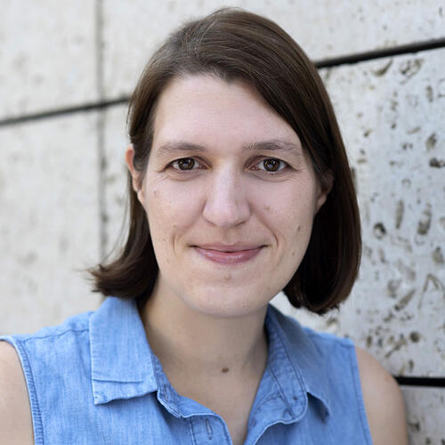
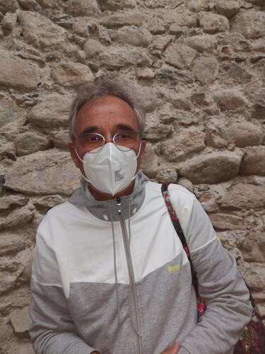
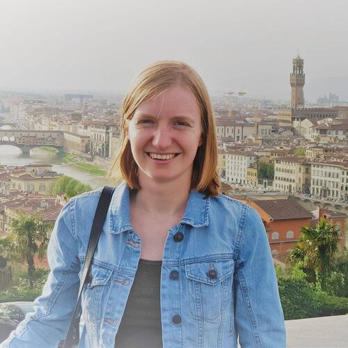
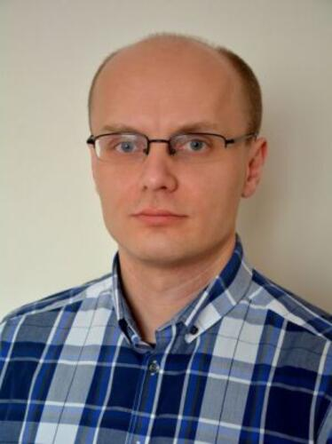
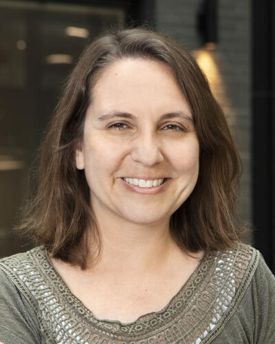

Peter Bühlmann studied mathematics at ETH Zürich and received his doctoral degree in 1993 from the same institution. He was a Postdoctoral Fellow from 1994-1995 and a Neyman Assistant Professor from 1995 - 1997 at UC Berkeley, before he returned to ETH Zürich in 1997. From 2013 - 2017, he was Chair of the Department of Mathematics at ETH Zürich. He is a Fellow of the Institute of Mathematical Statistics, a Fellow of the American Statistical Association, and was Co-Editor of the Annals of Statistics from 2010 - 2012. Other honors which he recently received include Doctor Honoris Causa from the Université Catholique de Louvain in 2017, Neyman Lecturer 2018 elected by the Institute of Mathematical Statistics, Rothschild Lecturer 2018 at the Newton Institute (Cambridge), recipient of the Guy Medal in Silver 2018 from the Royal Statistical Society, and plenary speaker at the European Congress of Mathematics 2021.
 Ruth Keogh is a Professor of Biostatistics and Epidemiology in the Medical Statistics Department at London School of Hygiene & Tropical Medicine. Her research focuses on statistical methods for the analysis of observational data, and she works especially on causal inference methodology and methods for the analysis of time-to-event data. She is particularly interested in addressing practical challenges arising in real applications and is involved in a number of areas of application in health research, with a particular focus on cystic fibrosis. Other areas of interest include methods for handling measurement error and missing data, prediction modelling, and design and analysis of case-control studies. Ruth is funded by a UK Research and Innovation Future Leaders Fellowship.
Information to follow.
International Drug Development Institute (IDDI),
Louvain-la-Neuve, Belgium, and I-BioStat, Hasselt University, Hasselt,
Belgium
Keywords: Generalized Pairwise Comparisons, Net
Treatment Benefit, Win Ratio, Success Odds
Leibniz Institute for Prevention Research and Epidemiology -
BIPS, Bremen, Germany
Keywords: causal inference, observational /
real-world data, estimands, target trial emulation, g-methods
University Medical Center Utrecht, The
Netherlands
Keywords: Amyotrophic Lateral Sclerosis, Hybrid
Design, Registry, External Control, Real World Data

Leibniz University Hannover, Germany
Keywords: Minimum effective dose; variance
heterogeneity; robust alternatives
US Food and Drug Administration, USA
Keywords: multiplicity, multiple endpoints,
overall type I error

Ghent University, Belgium
Keywords: covariate adjustment, causal inference,
standardization, treatment policy, robustness

Adam Mickiewicz University in Poznan
Keywords: Analysis of variance, functional data
analysis, parametric and nonparametric methods

Harvard Medical School and Harvard Pilgrim Health Care
Institute, USA
Keywords: causal inference, longitudinal data,
survival analysis, competing events